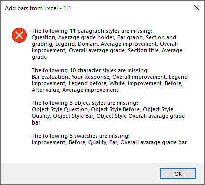

Check required function
As a rule, before executing the main part of a script, I run the PreCheck function to make sure everything is in place: e.g. check a document is opened, was saved, etc.
With numerous styles, swatches to check it becomes quite lengthy and time-consuming to duplicate lines of code and edit names so I wrote this function.
If everything is OK, it continues to the next function; if not, it makes a list of missing items and gives a warning in a single window.

Warning: the function doesn’t handle grouping of styles. For example, if you have, say, two styles with exactly the same name but in different groups – one of them existing and another missing – the script won’t give you a warning about the missing one.
var scriptName = "Add bars from Excel - 1.1";
PreCheck();
function PreCheck() {
var parStList = ["Question", "Average grade holder", "Bar graph", "Section and grading", "Legend", "Domain", "Average improvement", "Overall improvement", "Overall average grade", "Section title", "Average grade"];
var charStList = ["Bar evaluation", "Your Response", "Overall improvement", "Legend improvement", "Legend before", "White", "Improvement", "Before", "After value", "Average improvement" ];
var swatchList = ["Improvement", "Before", "Quality", "Bar", "Overall avarage grade bar"];
var objStList = ["Object Style Question", "Object Style Before", "Object Style Quality", "Object Style Bar", "Object Style Overall avarage grade bar"];
var report = "";
var listMissingParStyles = CheckRequired(parStList, "allParagraphStyles");
if (listMissingParStyles.length > 0) {
report += "The following " + ((listMissingParStyles.length == 1) ? "" : listMissingParStyles.length + " ") + "paragraph style" + ((listMissingParStyles.length == 1) ? " is" : "s are") + " missing:\r" + listMissingParStyles.join(", ") + "\r\r";
}
var listMissingCharStyles = CheckRequired(charStList, "allCharacterStyles");
if (listMissingCharStyles.length > 0) {
report += "The following " + ((listMissingCharStyles.length == 1) ? "" : listMissingCharStyles.length + " ") + "character style" + ((listMissingCharStyles.length == 1) ? " is" : "s are") + " missing:\r" + listMissingCharStyles.join(", ") + "\r\r";
}
var listMissingObjStyles = CheckRequired(objStList, "allObjectStyles");
if (listMissingObjStyles.length > 0) {
report += "The following " + ((listMissingObjStyles.length == 1) ? "" : listMissingObjStyles.length + " ") + "object style" + ((listMissingObjStyles.length == 1) ? " is" : "s are") + " missing:\r" + listMissingObjStyles.join(", ") + "\r\r";
}
var listMissingSwatches = CheckRequired(swatchList, "swatches");
if (listMissingSwatches.length > 0) {
report += "The following " + ((listMissingSwatches.length == 1) ? "" : listMissingSwatches.length + " ") + "swatch" + ((listMissingSwatches.length == 1) ? " is" : "es are") + " missing:\r" + listMissingSwatches.join(", ") + "\r\r";
}
if (report != "") {
ErrorExit(report, true);
}
else {
alert ("Everything is Okay!", scriptName);
}
}
function CheckRequired(list, collection) {
var item,
arr = eval("app.activeDocument." + collection),
names = [],
missing = [];
for (var i = 0; i < list.length; i++) {
item = list[i];
for (var j = 0; j < arr.length; j++) {
names.push(arr[j].name);
}
if (GetArrayIndex(names, item) == -1) {
missing.push(item);
}
}
return missing;
}
function GetArrayIndex(arr, val) {
for (var i = 0; i < arr.length; i++) {
if (arr[i] == val) {
return i;
}
}
return -1;
}
function ErrorExit(error, icon) {
alert(error, scriptName, icon);
exit();
}
Click here to download the function.